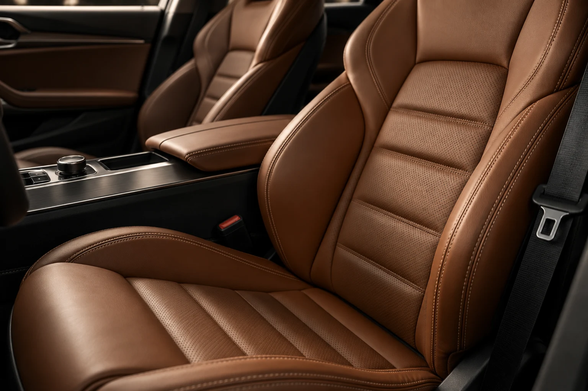

Сохранить
первое впечатление.
Защита уязвимых элементов кузова. Сначала определяем зоны и материал, затем готовим поверхность к оклейке.
Программа защитыДетейлинг. Защита. Внимание.
Сохранить характер автомобиля.
Вернуть глубину цвета.
Продумать уход до последнего штриха.
Философия ATLAS
В отражениях на кузове. В чистоте фактуры. В том, как аккуратно оформлен край плёнки. Мы собрали концепт студии, где результат складывается из последовательной работы.
Сначала задача и состояние автомобиля. Затем согласованный состав, подготовка и контроль. У каждой операции — своё место и понятная причина.
Направления работы
От повседневного ухода
до комплексной защиты кузова.
Не всем автомобилям нужно одно и то же
Три ситуации — три отправные точки.
Состав можно изменить в подборе.
Защита уязвимых элементов кузова. Сначала определяем зоны и материал, затем готовим поверхность к оклейке.
Программа защитыОчистка, оценка состояния лака и согласованная коррекция. Покрытие подбирается после подготовки.
Программа кузоваТекстиль, кожа, пластик и труднодоступные зоны. Уход с учётом материала и состояния салона.
Программа салона
Как устроена работа
Обсуждаем, как используется автомобиль. Фиксируем состояние, выбранные зоны и ожидания от результата.
Определяем работы, материалы, стоимость и время. Дополнительные операции обсуждаются отдельно.
Очистка и подготовка поверхности предшествуют основным операциям. Каждый этап выполняется в нужной последовательности.
Проверяем согласованный состав, рассматриваем автомобиль вместе и объясняем дальнейший уход за материалами.
Ваша программа
Выберите класс, задачу и дополнения.
Предварительная стоимость обновится сразу.
Внимание к фактуре
Кожа, текстиль, пластик и декоративные вставки требуют разного подхода. Сначала оценивают материал и состояние — потом выбирают метод и состав.

Перед первым визитом
С задачи и осмотра. Важно понять, хотите ли вы сохранить состояние нового автомобиля, привести в порядок кузов после эксплуатации или восстановить чистоту салона. Калькулятор помогает описать запрос, а не заменяет осмотр.
Плёнка — отдельный защитный материал на поверхности. Покрытие — состав, который наносят на подготовленный лак для изменения свойств поверхности и облегчения ухода. Это разные инструменты; выбор зависит от задачи и состояния автомобиля.
На состав влияют размер и состояние автомобиля, геометрия деталей, подготовительные работы и выбранные материалы. В примере калькулятора показана зависимость от класса автомобиля и программы; окончательная смета в реальной студии появляется после осмотра.
Да. В калькуляторе есть базовая программа и дополнения. Если работа уже входит в выбранную программу, повторно добавить и оплатить её нельзя.
У каждой программы есть ориентир по времени. Реальная продолжительность зависит от состояния автомобиля, подготовки, выбранного материала и технологических пауз. Точная дата выдачи согласуется перед началом.
Нет, это авторский концепт. Вы можете собрать состав, указать автомобиль и скачать бриф. Файл остаётся у вас, заказ в студии не создаётся.
ATLAS DETAILING STUDIO
Начните с задачи. Состав и предварительный расчёт
можно сохранить и спокойно пересмотреть.